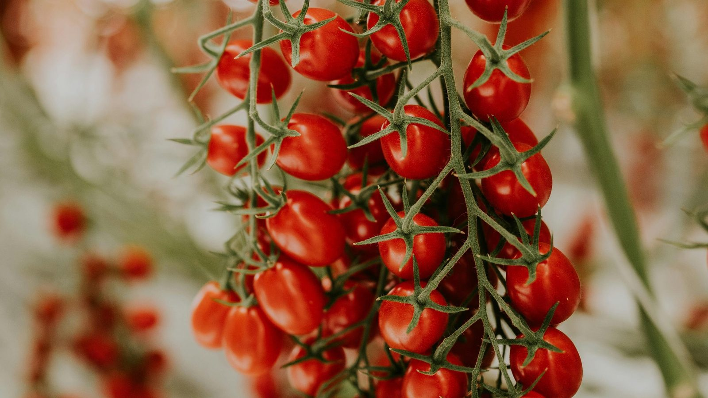

Langkah {{cur.n}} dari 6{{cur.when}}
{{cur.title}}
{{cur.body}}
Yang dilakukan
- {{it}}
Tips: {{cur.tip}}
Buah kecil manis yang rajin berbuah di polibag. Butuh matahari penuh, ajir, dan pemangkasan tunas — semua dipandu langkah demi langkah di bawah.

{{cur.body}}
Otomatis menyesuaikan fase dan cuaca di Sleman.